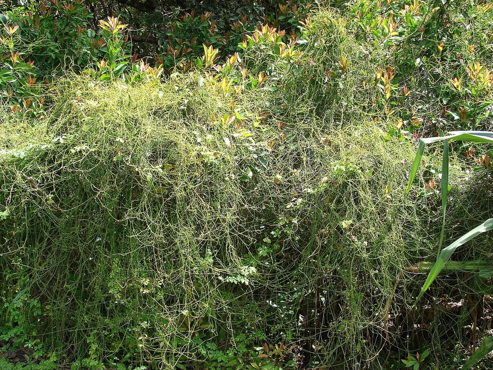
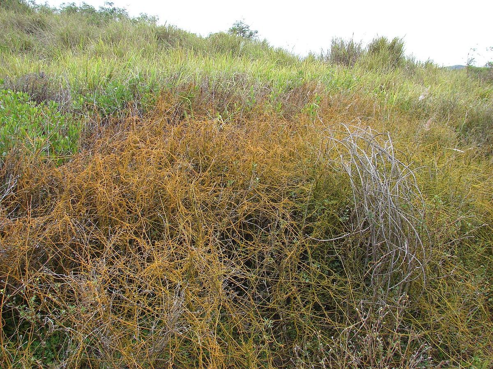
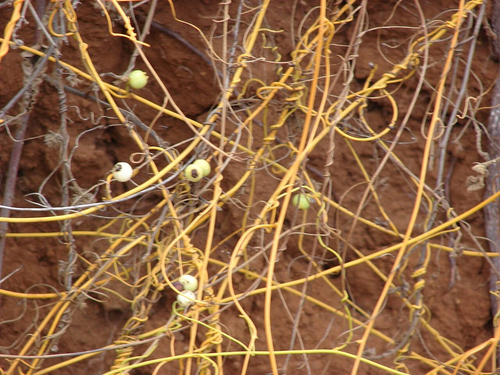

COMMON Beach strand Sea cliff Valley mouth
Cassytha filiformis
kaunaʻoa pehu, kaunaʻoa lei, kaunaʻoa uka · love vine, devil's gut, laurel dodder



Quick facts
| Family | Lauraceae |
|---|---|
| Scientific name | Cassytha filiformis |
| Hawaiian name(s) | kaunaʻoa pehu, kaunaʻoa lei, kaunaʻoa uka |
| English name(s) | love vine, devil's gut, laurel dodder |
| Status | Indigenous (native, non-endemic) |
| Conservation | — |
| Coastal zones | Beach strand Sea cliff Valley mouth |
| Occurrence | A conspicuous parasitic vine of Hawaiian coastal shrublands, common on Nāpali coastal cliff-tops draped over naupaka, ʻilima, ʻāweoweo, and ʻaʻaliʻi. Pantropical; occurs on the roadless Kauaʻi coast from Nuʻalolo Kai through Kalalau and at Māhāʻulepū on cliff-shrub margins. |
Hazards: TOXIC — do not consume. The vine and its small white berries contain alkaloids (including aporphine-type alkaloids) and are not edible. If you see white berries on an orange twining vine, do not eat them and do not include this plant in any food gathering.
How to identify
- Growth form
- Leafless twining parasitic vine that scrambles over host shrubs, forming loose masses of yellow-orange wiry thread-like stems draped across the host canopy.
- Size
- Vines to several metres long draping across host shrubs.
- Leaves
- Reduced to tiny scales, effectively absent as identification features. The stems themselves are the photosynthetic tissue.
- Flowers
- Tiny greenish-white, 3-parted, ~2 mm across, borne in small inconspicuous spikes along the stem.
- Fruit / seed
- Small round white berry, ~5–8 mm, one-seeded, often persistent on the vine and easy to see against the orange stems.
- Bark / stem
- Wiry orange to pale yellow-green stems 1–2 mm thick, with visible swollen attachment points (haustoria) where the vine has fused into its host to draw water and nutrients.
- Where it sits on the coast
- Over the tops of native coastal shrub canopies on cliff-top rims, strand-edge scrub, and dry valley-mouth thickets.
Clinchers (features that lock the ID)
- Leafless orange to yellow-green wiry vine draped over another plant's canopy — a signature Nāpali cliff-top sight.
- Visible swollen haustorial bumps where the vine attaches to host stems (hand-lens confirms).
- Small round white berries along the vine (unlike the yellow-orange berries of Cuscuta).
Look-alikes
- Cuscuta sandwichiana (kaunaʻoa, endemic dodder) — Cuscuta is much finer and brighter orange, with more slender thread-like stems and pale orange or yellow flowers/fruits rather than white berries. Cuscuta is mostly upland or freshwater-margin; Cassytha is the coastal species. The two share the "kaunaʻoa" name in Hawaiian usage, which is exactly why the berry colour and stem thickness matter.
- Cuscuta campestris (introduced dodder) — Very fine bright yellow-orange threads on herbaceous hosts, typically in disturbed inland ground rather than on woody coastal shrub canopies.
Ecology
Obligate stem-parasite that takes water and photosynthates from a wide range of host species. Ecologically important as a native shrub-level regulator; heavy infestations can suppress preferred host shrubs but the parasite is part of the native community. [16], [21], [22], [27], [28], [29]
Cultural significance
Kaunaʻoa (the name) is used in Hawaiian tradition for both Cassytha and Cuscuta and appears in mele and moʻolelo referencing coastal wahi. This guide names that tradition and defers cultural detail to Hawaiian practitioners.